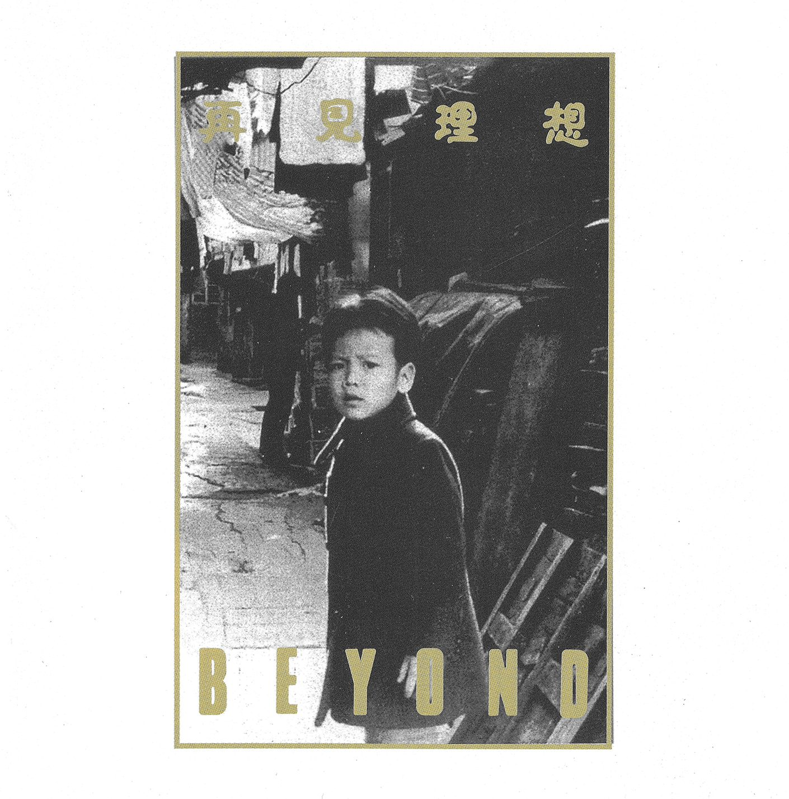
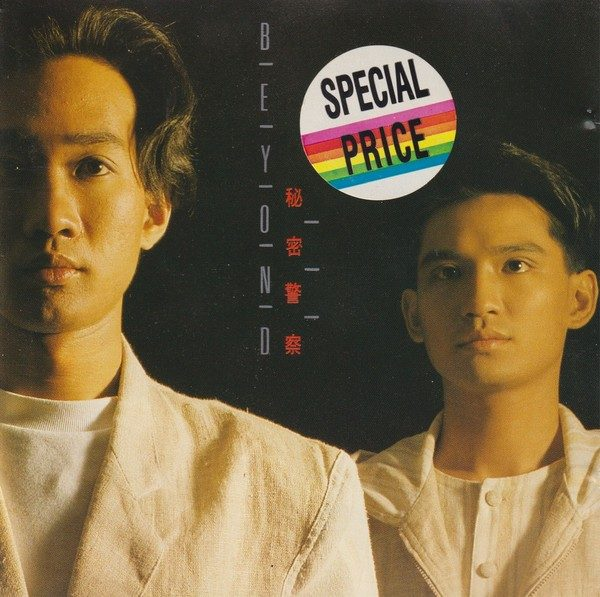
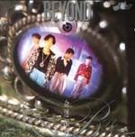
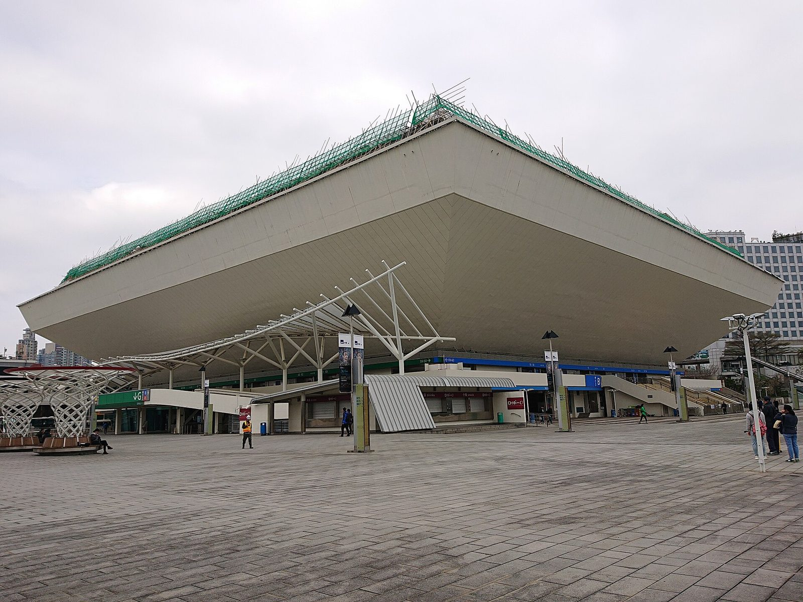
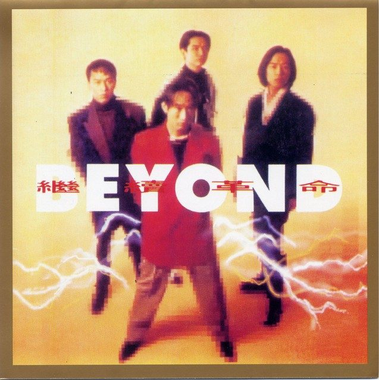
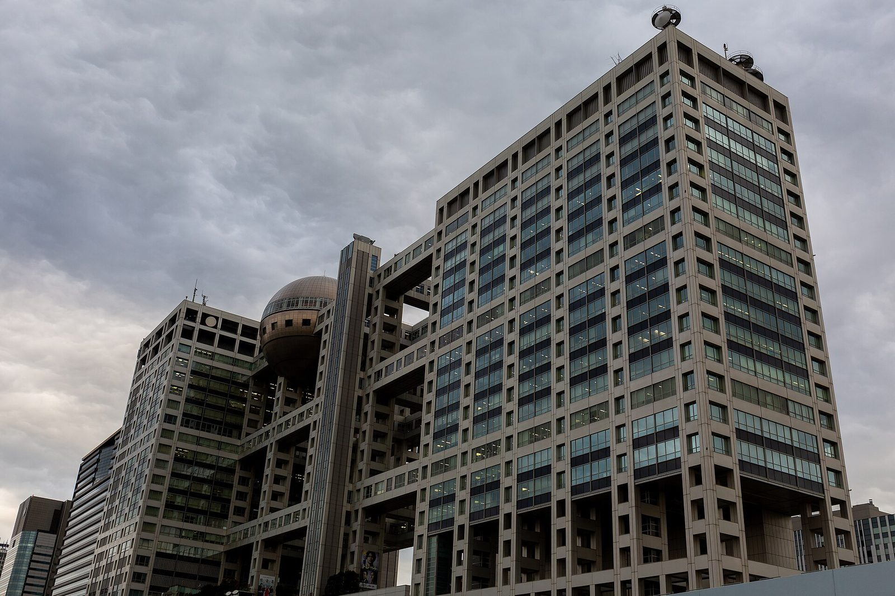
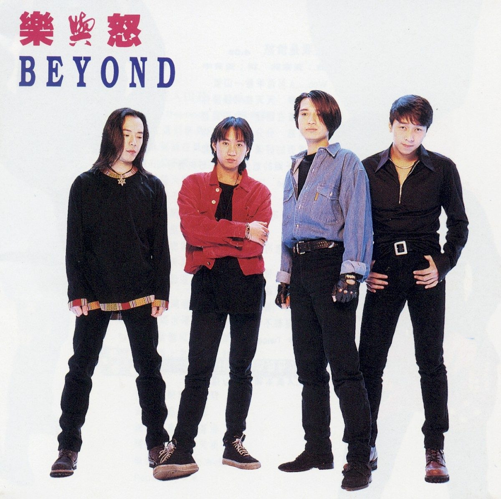
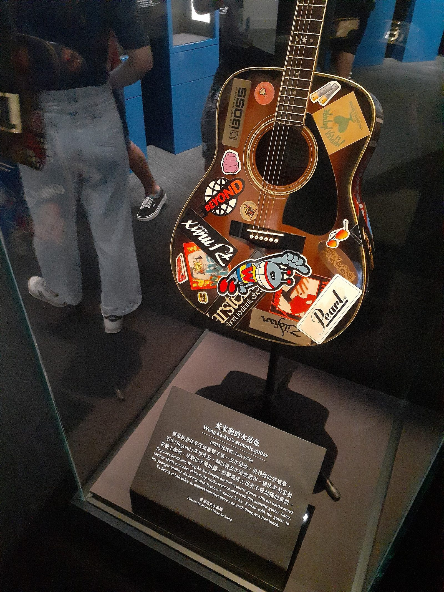

主唱黄家驹说过一句话，被弟弟黄家强原样转述给 BBC：「香港只有娱乐圈，没有乐坛。」[3]这句话几乎解释了 Beyond 的一生——为什么自资出卡带、为什么要去日本、为什么在一首写给自己的歌里唱「原谅我这一生不羁放纵爱自由」。
黄家驹与叶世荣经琴行老板介绍相识（中文维基记为 1980 年 8 月经土瓜湾嘉林琴行老板介绍[1]；快懂百科则记 1981 年经 Tom Lee 琴行老板介绍——两说并存，此处如实记录[6]）。1983 年，为参加《吉他杂志》举办的比赛，Beyond 正式组成；队名出自创队主音吉他手邓炜谦，意指「超越自己」，而非超越他人[1][2]。
早期人员流动频繁：邓炜谦、李荣潮 1983 年底相继离队，关宝璇、陈时安先后短暂在籍。1984 年黄家驹的胞弟黄家强补入贝斯，1985 年原本为乐队设计海报的美术生黄贯中接替离队的陈时安弹主音吉他——四人阵容就此成形[1][2]。

1985 年，他们在坚道明爱中心自资举办《永远等待演唱会》，演出亏损，却让他们被经理人陈健添看中；据英文维基转述，那次演出筹得约 1.6 万港元，随后 band 房里只剩 1000 元[1][2]。1986 年，五人阵容（键盘兼吉他刘志远已加入）自资录制卡带《再见理想》；同年 8 月赴台北参加首届亚太流行音乐节[1][6]。
1987 年首张粤语专辑《亞拉伯跳舞女郎》试图在摇滚与商业之间找路，销量并不理想[6]。转折出现在 1988 年：《秘密警察》卖出十万张（双白金），〈大地〉〈喜欢你〉两首歌让 Beyond 从半地下乐队变成主流乐队——代价是被部分老乐迷骂作「摇滚叛徒」[6]。同年 10 月，他们去北京首都体育馆演了两场[6]。

1989 年《Beyond IV》里写给母亲的〈真的爱你〉再夺十大中文金曲与十大劲歌金曲；1990 年《命運派對》达三白金，〈光輝歲月〉是黄家驹致敬南非领导人曼德拉的作品[6][3]。1991 年，关怀第三世界的〈AMANI〉获奖，9 月在红磡香港体育馆连开五场「生命接触」演唱会——BBC 中文回顾：1991 年的 Beyond 靠〈Amani〉与影视主题曲持续走红，但唱片销量与谭咏麟、张学友等一线歌手仍有差距[3][6]。


1992 年初签约日本 Amuse 经纪公司、唱片则交华纳发行，Beyond 把重心移到日本[6][3]。黄家强后来对 BBC 说：「那时我们觉得在香港很气馁，才会去日本。到了日本之后，原来我们遇到的压力不比在香港小。」在日本，他们要适应对方制作标准的严谨——家驹在电话里对好友刘宏博只说了四个字：在日本很辛苦[3]。
1992 年的《繼續革命》与 9 月的首张日语专辑《超越》，形象从亲切转为冷酷；1993 年 5 月，粤语专辑《樂與怒》发行——这是四人阵容的最后一张录音室专辑[6][7]。

日文单曲发行的前一天凌晨，Beyond 在东京富士电视台录制游戏节目《ウッチャンナンチャンのやるならやらねば!》。黄家驹从两米多高的舞台上跌落，头部着地，陷入昏迷[2][3]。黄家强记得：「我们另外几个人被主持人带到舞台一边，然后出事了，我们才冲过去——当时他已经跌下去了。」
6 月 30 日下午，昏迷六天的黄家驹在东京的医院去世，年仅 31 岁[2][3]。临时助理李家杰奉命回香港买药，一落地就接到电话——「我挂了电话打开收音机，那时各个电台已经都在播 Beyond 的歌了——刚好在播《海阔天空》。」

1994 年签约滚石，《二樓後座》是三人的第一张专辑，此后乐风转向另类。1999 年宣布暂时解散，2003 年为成立二十周年与家驹逝世十周年重组巡演，2005 年举行「Beyond The Story Live 2005」世界巡回告别演唱会后正式解散，三人各自发展[6][2]。
| 成员 | 分工 | 在籍 | 备注 |
|---|---|---|---|
| 黄家驹 Ka Kui（1962–1993） | 主唱 · 节奏吉他 | 1983–1993 | 创作核心，乐队的领袖；1993 年意外逝世[2] |
| 黄家强 Steve | 贝斯 · 主唱 | 1984–1999 / 2003–05 | 黄家驹胞弟[1] |
| 黄贯中 Paul | 主音吉他 · 主唱 | 1985–1999 / 2003–05 | 原为乐队设计海报，接替离队的陈时安[1] |
| 叶世荣 Wing | 鼓 · 打击乐 · 和音 | 1983–1999 / 2003–05 | 创队成员，与家驹同受 Pink Floyd 影响[1][2] |
| 刘志远 | 吉他 · 键琴 | 1986–1988 | 1988 年 4 月 30 日退出，此后乐队固定四人[1] |
| 早期成员 | 邓炜谦（主音吉他，队名取名者）· 李荣潮（贝斯）· 关宝璇 · 陈时安 | 1983–1985 | 均在队约一至两年[1] |

收錄於《樂與怒》｜粤语 ｜ 5 分 24 秒
Beyond 的音乐向来以吉他为主，但〈海阔天空〉由钢琴带入、最后在弦乐的伴奏中结束——黄家驹的好友刘宏博 1993 年 5 月在家里第一次听到未发表的 demo 时，被这一点震撼了。这首歌原名就叫《Piano Song》，最早由黄家驹用吉他自弹自唱的那版 demo 后来丢失[3]。
负责录音制作的是有古典音乐背景的韩裔日籍制作人梁邦彦。他原本只负责钢琴部分，后来进一步完成了开场和间奏的钢琴演奏，并请来 30 多位管弦乐手组成桑野圣乐团进棚——那是 Beyond 第一次用真正的弦乐团录歌，而不是香港惯用的电子乐器模拟[3][5]。乐队一致商定用弦乐增加节奏感和力量感，梁邦彦在邮件里对 BBC 说：「能够激发出他们最大的魅力，这是我身为音乐制作人的工作。」
1993 年正值 Beyond 成立十周年。第一句「今天我 寒夜里看雪飘过」，那场雪就是日本的雪——BBC 中文点明：〈海阔天空〉讲的是「为了理想，离开一个地方」的态度[3]。叶世荣说，当时听这首歌「没那么悲伤，而是有点励志」；黄贯中的版本是「有一点灰心，但同时也有希望」[3]。
最狠的一句其实是写给自己的：「背弃了理想 谁人都可以 哪会怕有一天只你共我」——先承认人人都可以背弃理想，再说哪怕全世界只剩你和我。这种先退一步再站住的写法，让它不像口号，倒像赌咒。
黄家强在香港电台《不死传奇》节目里回忆：家驹原本把那一句写成「也会怕有一天会跌倒 Oh yeah」，家强觉得不合逻辑——跌倒的人不会喊 yeah——于是改成了 Oh no。谁也没想到，编完这首歌不到两个月，他真的从高台上跌了下去[4]。要说明的是：这是家人事后的叙述，把它当成巧合即可；但正是这个巧合，让整首歌在乐迷心中被钉在了「谶语」的位置上。
〈海阔天空〉并不是《樂與怒》的第一主打——唱片公司先推的是黄贯中填词、以「爸爸」「妈妈」隐喻英国与中国的〈爸爸媽媽〉[3]。5 分 24 秒的〈海阔天空〉对当时的电台来说太长，即使剪成 4 分钟版本仍不奏效；它在排行榜成绩普通，从来不是冠军歌，《樂與怒》推出三周就被挤出销量榜前十，同榜热映的是草蜢、黎明、张学友和刘德华[3]。
然后是 6 月 30 日。香港各家电台不约而同播起这首歌，每句歌词都像有了寓意。据华纳高层黄柏高与经理人陈健添回忆：《樂與怒》首批出货两万余张之后几乎没有唱片店追加，在黄家驹去世后的三四个月里，销量冲到了 30 万张[3]。黄家驹在世时，四人阵容的 Beyond 只在现场表演过两次〈海阔天空〉——「很无奈，这首歌大部分时间都是三个人玩，」黄贯中说，「这首歌原本是有他在的。」[3]
再往后，它脱离了纪念歌的范畴：2008 年汶川地震后刘德华填国语词成了〈承诺〉，北京奥运会刘翔退赛时场内响起的就是它，2013、2015 年广州恒大两夺亚冠时天河体育场都在唱[3]。2022 年 4 月 12 日，滚石唱片 2011 年上传的官方 MV 成为 YouTube 上第一支点击破亿的粤语歌曲[7][8]。香港电台 DJ 梁兆辉的说法最贴切：「它好像变成了另外一首《狮子山下》。」[3]

全片 5 分 24 秒，与〈海闊天空〉（5:24）等长，由真实史料图片 Ken Burns 式运镜构成。不含音频——请自行播放这首歌同步观看。
专辑封面 ×6（再見理想 1986 / 秘密警察 1988 / 命運派對 1990 / 猶豫 1991 / 繼續革命 1992 / 樂與怒 1993 / THIS IS LOVE I 1993 / 亞拉伯跳舞女郎 1987）——Cover Art Archive（MusicBrainz），如：musicbrainz.org/release-group/4f019b75…
黄家驹的木吉他 ×2——Wikimedia Commons〈HKHM 沙田 香港文化博物館 Hong Kong Pop 60+ Exhibition August 2021 SS2 187 / 188〉，摄影 Rroame LaOcM，CC BY-SA 4.0；2021-08-11 摄于香港文化博物馆「香港流行文化 60+」展览，展品由黄家强捐赠
香港體育館——Commons〈Hong Kong Coliseum in 2018.jpg〉，Ceeseven，CC BY-SA 4.0
富士電視台總部（台場）——Commons〈20190322 Odaiba Fuji Television Network building.jpg〉，Balon Greyjoy，CC0
香港夜景——Commons〈Hong Kong Night Skyline.jpg〉，Base64（CarolSpears 修图），CC BY-SA 3.0
東京雪夜（上野）——Commons〈Street with snow in Ueno 2013-01-14 02.jpg〉，naosuke ii，CC BY 2.0
納爾遜·曼德拉肖像（延伸阅读配图）——Commons〈Nelson Mandela-2008.jpg〉，South Africa The Good News，CC BY 2.0